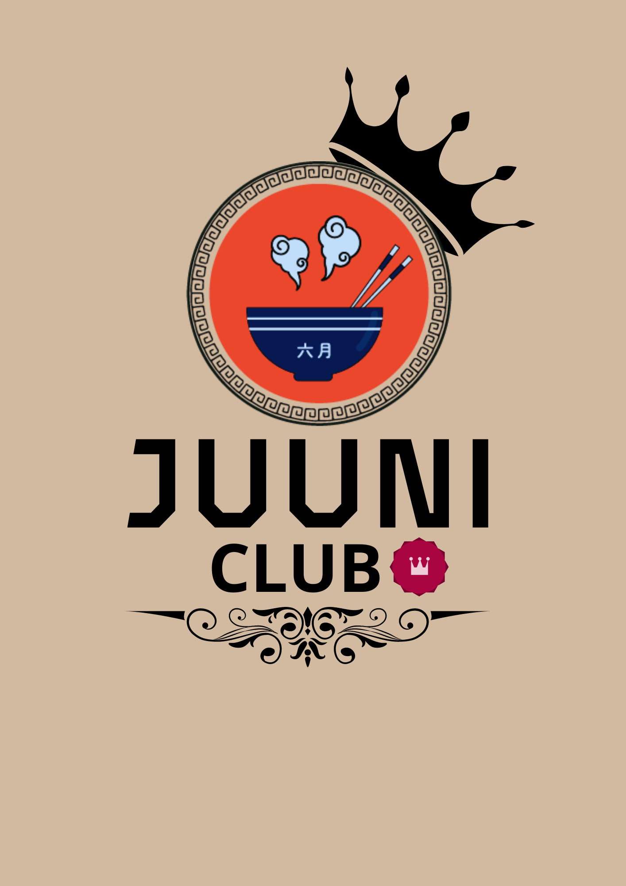

Bem-vindo(a) ao Juunishi
"Seu destino encontra-se aqui!"
O Juunishi, é um restaurante japonês único e encantador que combina a culinária japonesa com a tradição do horóscopo japonês. Ele é um refúgio para os amantes da gastronomia japonesa e da cultura astrológica. Neste espaço encantador, você poderá desfrutar de uma experiência culinária autêntica enquanto explora os segredos do zodíaco japonês.
Além da experiência culinária, o Juunishi também oferece um ambiente acolhedor e sofisticado, decorado com elementos do horóscopo japonês, que proporcionam uma atmosfera mágica e convidativa. Os clientes são convidados a explorar as características e os traços do seu próprio signo enquanto apreciam as iguarias preparadas com maestria.
Um prato que representa o signo de Coelho, pessoas com esse signo são conhecidos por serem sensíveis, puros e simpáticos. Este sushi exclusivo combina ingredientes frescos, como salmão, abacate e pepino, enrolados em uma folha de alga nori. É servido com um molho especial que realça os sabores únicos e cria uma explosão de frescor.
Inspirado pelo signo de Tigre, conhecido por sua pela busca de desafios e e sonhos idealistas, este prato apresenta camarões e vegetais frescos, mergulhados em uma massa leve de tempura, e fritos até ficarem crocantes e dourados. É acompanhado por um molho agridoce que complementa perfeitamente a textura e o sabor dos ingredientes.
Para o signo de Galo, que é associado à perfeição e ao equilíbrio, o Juunishi oferece um ramen delicado e harmonioso. Este prato apresenta macarrão artesanal cozido no caldo de missô suave e saboroso, acompanhado de fatias de carne de porco, brotos de feijão, cogumelos frescos e cebolinha, resultando em um equilíbrio perfeito de sabores e texturas.
Inspirado pelo signo do Carneiro, conhecido por serem Cautelosos, protetores e obstinados, o Juunish oferece gyoza de peixes frescos. Esses bolinhos de massa fina são recheados com uma mistura suculenta de peixe branco, camarão e vegetais picados. São servidos com um molho de mergulho leve e refrescante, destacando os sabores delicados dos frutos do mar.
Para o signo de Galo, que é associado à perfeição e ao equilíbrio, o Juunishi oferece um ramen delicado e harmonioso. Este prato apresenta macarrão artesanal cozido no caldo de missô suave e saboroso, acompanhado de fatias de carne de porco, brotos de feijão, cogumelos frescos e cebolinha, resultando em um equilíbrio perfeito de sabores e texturas.
Inspirado pelo signo do Carneiro, conhecido por serem Cautelosos, protetores e obstinados, o Juunish oferece gyoza de peixes frescos. Esses bolinhos de massa fina são recheados com uma mistura suculenta de peixe branco, camarão e vegetais picados. São servidos com um molho de mergulho leve e refrescante, destacando os sabores delicados dos frutos do mar.
Para o signo de Galo, que é associado à perfeição e ao equilíbrio, o Juunishi oferece um ramen delicado e harmonioso. Este prato apresenta macarrão artesanal cozido no caldo de missô suave e saboroso, acompanhado de fatias de carne de porco, brotos de feijão, cogumelos frescos e cebolinha, resultando em um equilíbrio perfeito de sabores e texturas.
Inspirado pelo signo do Carneiro, conhecido por serem Cautelosos, protetores e obstinados, o Juunish oferece gyoza de peixes frescos. Esses bolinhos de massa fina são recheados com uma mistura suculenta de peixe branco, camarão e vegetais picados. São servidos com um molho de mergulho leve e refrescante, destacando os sabores delicados dos frutos do mar.
Conheça a novidade do Junnishi. O Junni Club é o clube de fidelidade exclusivo de nosso restaurante, ele foi feito pensando para os apreciadores da culinária japonesa e do horóscopo japonês! Com ele você acumula pontos que pode usar para resgatar brindes, além de possuir benefícios exclusivos!
